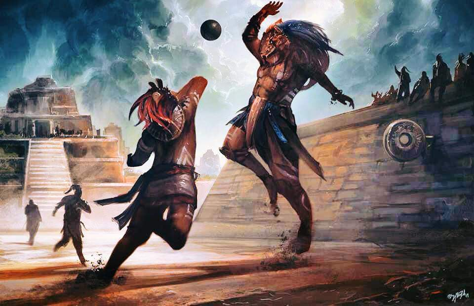

Es el país más poblado de Centroamérica, con 17,109,746 de habitantes según el censo realizado en el año 2021.
El país posee una superficie de 108 889 km2.
BANDERA DE GUATEMALA


GUATEMALA EN LA ACTUALIDAD: (del náhuatl: Quauhtlemallan, "lugar de muchos árboles"), oficialmente República de Guatemala, es un estado soberano, libre e independiente situado en el extremo noroccidental de América Central. Políticamente, es una república democrática y representativa organizada para su administración en 22 departamentos.Es el país más poblado de Centroamérica, con 17,109,746 de habitantes según el censo realizado en el año 2021.
El país posee una superficie de 108 889 km2.
BANDERA DE GUATEMALA
HISTORIA: Guatemala está situada dentro del área geográfica conocida como Mesoamérica. Dentro de sus límites territoriales se desarrollaron varias culturas. Entre ellas la Civilización Maya que fue notable por lograr un complejo desarrollo social. Sobresalió en varias disciplinas científicas tales como la arquitectura, la escritura, un avanzado cálculo del tiempo por medio de las matemáticas y la astronomía. El calendario maya que según los historiadores, era más preciso que el calendario gregoriano que utilizamos hoy en día. Eran cazadores, agricultores, practicaban la pesca, domesticaban animales como pavos y patos; se trasportaban en canoas para navegar por los ríos y para viajar a las islas cercanas. También destacaron en la pintura, la escultura, la orfebrería y la metalurgia del cobre, tejían el algodón y la fibra de agave, desarrollaron el más completo sistema de escritura en América prehispánica, entre los deportes que practicaban se destaca el juego de pelota, el cual más que un juego era una ceremonia.  Conquista de Guatemala: La conquista de Guatemala fue un conflicto que forma parte de la colonización española de América en el territorio de lo que hoy es la república de Guatemala en América Central. Antes de la conquista, este territorio comprendía varios reinos mesoamericanos, la mayoría de los cuales pertenecía a la civilización maya.Guatemala en la Época Colonial: llamada Reino de Guatemala que era administrada por la Real Audiencia de Guatemala (la cual estaba encabezada por un presidente que era designado por el monarca español y que además ostentaba el cargo de gobernador y capitán general) y que estaba constituido por el territorio de Guatemala, Belice, El Salvador, Honduras, Nicaragua y Costa Rica, además del estado mexicano de Chiapas y las actuales provincias panameñas de Chiriquí y Bocas del Toro. Independiencia de Guatemala y (Centroamérica) Se denomina Independencia de Centroamérica a la conmemoración, por parte de los actuales países de Guatemala, Honduras, El Salvador, Nicaragua y Costa Rica, de la firma del Acta de Independencia de América Central el 15 de septiembre de 1821. Tal Capitanía estaba conformada, en ese entonces, por las provincias de Guatemala, Chiapas, Comayagua, San Salvador, Nicaragua y Costa Rica. La suscripción del documento trajo como consecuencia la independencia del Gobierno Español. A diferencia de los demás países americanos, exceptuando a Panamá, la Independencia de Centroamérica fue un proceso relativamente pacífico. Revolución de Guatemala de 1944: La Revolución de Guatemala de 1944, conocida también como Revolución de Octubre o como el 20 de octubre, fue un movimiento cívico-militar ocurrido en Guatemala el 20 de octubre de 1944, efectuado por militares, estudiantes y trabajadores, que derrocó al Gobierno de facto del general Jorge Ubico,2 dio lugar a las primeras elecciones libres en ese país, e inauguró un período de diez años de modernización del Estado en beneficio de las mayorías de clase trabajadora. Tras la serie de descontentos de la población guatemalteca con el gobierno de Jorge Ubico, este se vio obligado a renunciar el 1 de julio de 1944. Golpe de Estado de Guatemala de 1954: El golpe de estado que estremeció a Guatemala en 1954 fue el resultado de la operación encubierta llamada PBSUCCESS (Criptónimo CIA). Esta fue organizada por la CIA estadounidense para derrocar a Jacobo Arbenz Guzmán, el Presidente de Guatemala democráticamente electo, por oponerse a los intereses de la United Fruit Company y por permitir que los miembros del partido comunista de Guatemala —Partido Guatemalteco del Trabajo— influyeran en las decisiones más importantes de su gobierno. Guerra Civil de Guatemala: fue un largo conflicto bélico librado en ese país centroamericano entre 1960 y 1996 dentro del marco de la Guerra Fría entre el bloque capitalista de los Estados Unidos y el bloque comunista de la Unión Soviética. La guerra causó un gran impacto en este país centroamericano en términos económicos y políticos y agudizó la polarización de la sociedad guatemalteca. El conflicto se inició a principios de la década de los sesenta, cuando el 13 de noviembre de 1960 se realizó un fallido golpe de Estado con el fin de derrocar a Miguel Ydígoras Fuentes; este, sin embargo, fue solo el último de una serie de sucesos que provocaron la polarización de la sociedad guatemalteca desde la Independencia en 1821 hasta la caída del régimen del coronel Jacobo Árbenz Guzmán en 1954. En 1962 se crea el primer grupo guerrillero del país, el Movimiento Revolucionario 13 de Noviembre (MR13), el cual se organizó y estuvo activo en el oriente del país hasta su disolución en 1971. La guerra civil finalizó el 29 de diciembre de 1996, durante la presidencia de Álvaro Arzú, con la firma del Acuerdo de Paz Firme y Duradera entre el Gobierno de Guatemala y la Unidad Revolucionaria Nacional Guatemalteca, poniendo fin a una guerra que duró más de 36 años. Procesos democráticos del siglo XXI: El Proceso democrático de Guatemala se inició inmediatamente después de la firma del tratado de Paz Firme y Duradera en 1996 y tuvo como fundamento la Constitución de la República de Guatemala de 1985. GEOGRAFÍA: Es un país en gran parte montañoso, con la notable excepción de sus bordes marítimos donde se extienden llanuras costeras bajas y, a veces, pantanosas. Dos grandes cadenas montañosas de altitud elevada recorren la parte central del país en dirección NO-SE, dividiéndolo en tres áreas geográficas distintas: